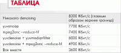

Первоначально Linux использовалась в основном программистами и в качестве серверной ОС, что и сказывалось на том наборе программ, который сопровождал данную систему в первые годы ее развития. В последнее же время наметилась тенденция к применению данной ОС в практически любой сфере, где может работать компьютер, и это не замедлило сказаться на ассортименте программного обеспечения. Об одном из пакетов программ, с помощью которого можно осуществлять запись, простой монтаж, воспроизведение и компрессию аудио и видео на этой платформе, и пойдет речь в данной статье.
Итак, пакет носит довольно нехитрое название MJPEG Tools, найти в Интернете можно по адресу http://mjpeg.sourceforge.net. На сайте проекта доступна некоторая документация (особенно рекомендую почитать MJPEG Howto), а также ссылки на некоторые другие интересные и в большинстве своем дополняющие проекты. Для компиляции понадобятся программы и библиотеки quicktime4linux (рекомендуется компилировать с опциями ./configure --use-dv --use-firewire), jpeg-mmx и libmovtar. Сам пакет состоит из 30 утилит, каждая из которых имеет свое определенное назначение. Мне кажется, что это намного проще, чем создавать одну, но полнофункциональную —каждая утилита развивается независимо от других, при этом большинство опций тождественны для всех, что существенно облегчает изучение. Общим же для большинства представленных ниже утилит будет то, что они имеют опции для создания результирующего файла, а вот данные для своей работы получают со стандартного входа stdin. С помощью каналов (pipes) все их можно соединить практически в любой комбинации, лишь бы такое соединение имело какой-то смысл. Но прежде всего пакет MJPEG Tools предназначен для использования с устройствами захвата, базирующимися на кодеке Zoran ZR36067 MJPEG — например, xawtv или broadcast 2000; все утилиты без проблем могут ими использоваться, чтобы обрабатывать и сжимать MJPEG-потоки, снятые с любой из video4linux-программ.
Я не буду касаться подробностей различных форматов — если возникнут вопросы, зайдите на страничку http://www.mir.com/DMG, где вы найдете ряд инструкций по записи видео и описание различий видеоформатов. Еще хочу добавить, что практически все программы, за исключением разве что предназначенной непосредственно для захвата, некритичны к системным ресурсам, хотя, как вы должны понимать, для подобных задач лучше иметь машину помощнее.
Запись (захват) видео осуществляется при помощи утилиты lavrec. По умолчанию она использует /dev/video в качестве входного видеоустройства, звук — /dev/dsp и миксер /dev/mixer. Но с помощью соответствующих переменных LAV_VIDEO_DEV, LAV_AUDIO_DEV и LAV_MIXER_DEV можно все это переопределить.
Запустить на запись утилиту можно с помощью примерно такой команды:
Опция -f позволяет указать формат выходного файла, в данном случае это .avi (q — Quicktime, m — Movtar); по умолчанию умная утилита смотрит на расширение файла (.avi, .qt, .movtar) и принимает решение о формате сама, но наверное, лучше подстраховаться. С помощью -i S задан формат входного сигнала SECAM через SVHS, чтобы уменьшить размер изображения в два раза (и выходного файла), использована опция -d, при необходимости изменить размер по горизонтали и вертикали индивидуально, необходимые пропорции можно указать с помощью двух цифр -d 12. При необходимости, вместо имени выходного файла можно воспользоваться шаблоном, например, file%02d.avi создаст файлы file00.avi, file01.avi и т.д., таким путем можно спокойно обойти ограничение максимального размера файла в используемой файловой системе, и программа в этом случае остановится только тогда, когда диск заполнится полностью. По умолчанию записывается текущий канал xawtv, но с помощью -C его можно изменить, при этом применяется описание в стиле xawtv, т.е. -C europe-west:SE27. Соотношение качество/размер выходного файла устанавливается при помощи -q # (где # — число в промежутке 0 … 100, по умолчанию 50). Кстати, подбирая различные варианты опций d и q, можно добиться вполне приличного качества при меньшем размере выходного файла.
Но это еще не все способы получить видео. С помощью утилиты jpeg2yuv можно все картинки в формате .jpeg собрать в единый видеофайл. Например, такая команда:
создаст файл result.yuv, содержащий видеоинформацию с 25 FPS. Шаблоны для файлов можно задавать в стиле C, точнее, printf — подробности в цикле статей Тихона ТАРНАВСКОГО «Язык, на котором говорят везде» (МК №№1-3, 5, 7, 9, 11, 14, 16 (224-226, 228, 230, 232, 234, 237, 239)):
Номер изображения, с которого нужно начать запись, и их количество устанавливаются при помощи опций -b и -n. Вот так можно собрать все файлы начиная с image3.jpg, общим числом 50:
А следующим ходом добавляем звук:
Я себе таким образом уже альбомчик забацал :-).
При помощи другой утилиты, ppmtoy4m, можно аналогичным образом склеить видеофайлы в формате .ppm:
При помощи команды cat направляем все .ppm-файлы на вход ppmtoy4m, которой пропускаются первые десять кадров и сохраняются последующие 60; опция -F устанавливают скорость передачи кадров — для PAL/SECAM устанавливается 25:1.
Можно создать видеопоток из одного файла, например, для заставки:
При этом будет в поток рекурсивно выводиться файл image.ppm, опция -n указывает на количество проходов.
Если под рукой, как назло, нет файлов в данном формате, то на выручку придет утилита convert из пакета ImageMagick (см. статью Петра «Roxton’a» СЕМИЛЕТОВА «ImageMagick: волшебство имиджа», МК №11 (234)):
С помощью такой вот нехитрой конструкции конвертируются все .jpg-файлы, и результат может просматриваться в видео.
Понемногу дошли и до программ для оценки (воспроизведения) полученного результата. Для этого используются две утилиты — lavplay и glav (вторая представляет собой фронт-энд к первой):
Теперь мы увидим изображение и услышим звук. В данном примере декодирование файла полностью ляжет на плечи центрального процессора; при помощи -p Н эту задачу можно переложить на аппаратные средства, есть еще флаг C, включающий выход TV, но к превеликому сожалению, последние два флага работают только с чипами Zoran, поэтому придется в большинстве своем использовать мощь ЦП. Соответственно, при помощи -Z, -z и --size NxN можно задать полноэкранный вывод, zoom или установить размер экрана. Есть и опция -g/--gui-mode, которая просто запускает glav.
С помощью glav дополнительно можно подредактировать получившийся файл. Опций немного, возможно только удаление частей, вырезка, вставка копий видеофрагментов. Точнее было бы сказать, не отредактировать, а разметить — оригинал-то остается нетронутым. С помощью кнопок Select Start и Select End выделяется фрагмент файла и назначается действие, далее при выходе необходимо записать все в обычный текстовый файл (дальнейшем подобный файл будет называться editlist) с помощью Save All и вскормить этот файл утилитам lav2wav, lav2yuv, lavtrans, которые и производят деструктивные действия. Поэтому если необходимо разбить записанное видео на несколько меньших частей, просто отмечают части и затем сохраняют каждую часть в различные файлы. После этого вводим примерно такую команду.
Здесь с помощью опции -о указывается конечный файл, editlist — имя сохраненного с помощью Save All или Save Select файла в glav, а опция -f a по-прежнему указывает на выходной формат, в данном случае .avi. Утилита lavtrans позволяет объединить несколько файлов в один, при этом при необходимости можно переконвертировать в нужный формат. Вот так.
Иногда нужно выделить звук из видеофрагмента, например, для звукового оформления системных событий, чтобы конвертировать в другой формат или чтобы просто удалить шум. Это можно проделать аж двумя способами. Первый — при помощи опции -f с флагом w, указывающим на звуковой файл в качестве выходного:
Иначе, на помощь может прийти отдельная специально обученная утилита lav2wav, которая по умолчанию выдает сигнал в stdout, что позволяет без остановки закодировать его тем же Lame, при этом сигнал может быть сохранен и в файле:
Но кстати, работает и такая конструкция, использующая файл, полученный при помощи glav, и позволяющая избежать лишних действий.
А вот, например, попала в руки пиратская копия фильма «Матрица-2», которую хочется разложить по кадрам, чтобы себе обои на рабочем столе застелить. Да пожалуйста. Сказано — сделано:
Теперь в созданном подкаталоге jpg будет создано великое множество графических файлов, от image00000.jpg до imageххххх.jpg. Выбирай, не хочу.
При необходимости выделить всего один кадр, можно применить и вот такую конструкцию:
Теперь кадр номер 15 перекочует в файл wallpaper.pnm.
А вот утилита lavpipe делает возможным создание простых переходов между фильмами или комбинирование уровней.
Например, имеется два видеофайла, intro.avi и epilogue.mov, мы хотим сделать из intro.avi переход в epilogue.mov продолжительностью в одну секунду (25 кадров для PAL или 30 кадров для NTSC). При этом intro.avi и epiloque.mov должны иметь один и тот же формат (точнее, одинаковые скорость передачи кадров и разрешающую способность). Например, два файла с разрешением 352288 системы PAL содержат: intro.avi — 250 кадров, а epilogue.mov — 1000 кадров. Таким образом, выходной файл будет содержать: первые 225 кадров intro.avi, 25 кадров перехода, которые содержат последние 25 кадров intro.avi и первых 25 кадров epilogue.mov, и далее 975 оставшиеся кадров epilogue.mov. Получить последних 25 кадров intro.avi можно например так.
Опция -o 255 указывает lav2yuv на смещение от начала на 225 кадров, а -f 25 выбирает из потока ровно 25 кадров. Но этот вариант хорош, когда известно количество этих самых кадров, а кто их там вообще считает? Поэтому удобнее будет такой вариант.
То есть, используем негативное смещение с конца файла.
Первые 25 кадров epilogue.mov (по умолчанию -о, 0, т.е. смещение от начала — 0 кадров):
Далее соединяем при помощи lavpipe два потока:
Результатом будет поток, который можно направить в другую утилиту, transist.flt.
Последняя должна иметь информацию относительно продолжительности перехода и прозрачности второго потока в начале и конце перехода. Для этого в нашем случае используем следующие флаги: -о [0-255], указывающий на непрозрачность второго потока с начала (0 — поток полностью прозрачен, 255 — полностью непрозрачен), -О [0-255] — непрозрачность второго потока с конца, и -d num — продолжительность перехода в кадрах.
В нашем случае правильный запрос при переходе от потока 1 к потоку 2 выглядит так:
Опции -s и -n утилиты transist.flt по своему значению эквивалентны соответственно параметрам -o и -f lav2yuv и необходимы, когда надо выполнить часть перехода. Далее полученный поток сжимаем при помощи yuv2lav:
т.е. читаем yuv-поток от stdin и на выходе получаем .avi-файл (-f a) с JPEG-сжатием качества 80. Вот теперь мы имеем целую команду для создания перехода:
Результат может быть оформлен как LAV Edit List, который можно использовать с утилитами glav или lavplay, или непосредственно с mpeg2enc с lav2yuv, или объединить все в один mpeg-файл с lavtrans, или же комбинацией lav2yuv|yuv2lav.
Все это, конечно, хорошо, но размеры файлов получаются иногда ужасающими; желательно немножечко сжать получившийся результат. На то есть инструменты. Например, lav2mpeg, позволяющая преобразовать lav-файлы или поток в MPEG. В качестве входной информации может выступать любая комбинация AVI (.avi), Movtar (.movtar), Quicktime (.qt/.mov) или editlist-файлов:
В результате получим на выходе MPEG1-файл output.mpg, полученный из инструкций в editlist, с видеобитрейтом 2110 Кбит/c и аудиобитрейтом 160 Кбит/c, размером 320240 пикселей.
Или чтобы создать MPEG2 из предварительно созданного file.avi:
В процессе своей работы данная утилита считывает конфигурационный файл ~/.lav2mpegrc, в котором можно установить опции по умолчанию, чтобы не задавать их каждый раз в командной строке.
Далее создаем звук. В MPEG1-видео в качестве звука используют файлы MPEG1-layer2; для MPEG2-видео можно использовать MPEG1-layer2 и MPEG1-layer3 (.mp3). MP3 — неофициальный аудиоформат: хотя большинство VCD-проигрывателей поддерживают его, для видеодисков он недопустим. Для кодирования в MPEG1-layer2 применяется утилита mp2enc. Если все же потребуется MP3, то подставьте в пример соответствующий кодер (например, lame).
Получим звуковой файл sound.mp2 с битрейтом по умолчанию 224 Кбит/c, или обычный вавчик:
Параметр -v 2 добавлен для информативности. MPEG1 официально не поддерживает VBR (Variable Bit Rate), но если действительно нужен такой файл, то попробуйте установить параметр -b очень большим (2500) — говорят, иногда работает. Протестировать полученный файл можно с помощью чуть не любого проигрывателя, например, plaympeg sound.mp2 или mpg123 sound.mp2.
Конвертировать в форматы MPEG 1/2 можно и при помощи утилиты mpeg2enc, имеющей впечатляющее количество опций:
При этом на выходе получится видеофайл с битрейтом по умолчанию 1152 Кбит/c, что оптимально при создании VCDS. При необходимости определить большое количество файлов можно использовать и шаблон, например, %nd, где n — номер:
Получится видеофайл с битрейтом 1500 Кбит/с. Опция -r--motion-search-radius устанавливает поисковый радиус 24 (16 по умолчанию, 16 и 24 оптимально). В двух словах, насколько далеко будут просматриваться смежные сектора и кадры. Значения (0, 8), улучшают скорость кодирования, но получается более низкое качество, в то время как при более высоком значении (24, 32, …) улучшается качество ценой скорости.
Утилита yuvscaler дополнительно позволяет автоматически подгонять (масштабировать) полученное изображение под формат, требуемый спецификациями, например, для записи VCD:
На выходе получим файл, подогнанный под размер VCD, т.е. для PAL/SECAM 352288 и NTSC 352240 и закодированный как MPEG1-поток.
Для SVCD все масштабируется к 480480 NTSC или 480576 PAL/SECAM:
-М указывает на высококачественный bicubic-алгоритм Mitchell-Netravalli — что за алгоритм такой, если честно, не разобрал, но рекомендуется, вроде как действительно ничего. Для установки видеорежима 16:9 и SVCD можно применить такую комбинацию: yuvscaler -M WIDE2STD -O SVCD. При помощи флагов -I и -О с соответствующими опциями можно отобрать только нужную часть кадра, остальное же будет черным (-I USE_450x340+20+30 -O SIZE_320x200). Теперь командой plaympeg video.m1v можно проверить результат.
На данном этапе имеем отдельно подготовленные MPEG видео- и звуковой файлы в выбранном в формате. Теперь осталось слить их в один файл. Здесь на помощь придет утилита mplex, позволяющая соединить один или большее количество MPEG-1/2 потоков видео, MPEG layer-II/III, AC3- и MPEG(5.1)-аудиопотоки в единственный поток программы. На выходе в зависимости от выбранных опций можно получить файл в формате VCD или SVCD, который, используя специальные средства записи типа vcdimager (http://www.vcdimager.org) или любую другую программу, предназначенную для этой цели, например пакет cdrtools, можно слить на болванку и запустить в любом, в том числе и бытовом проигрывателе. Для записи DVD (а почему бы и нет) удобнее будет воспользоваться утилитой Dvdauthor (http://dvdauthor.sourceforge.net), или посмотрите на http://fy.chalmers.se/~appro/linux/DVD+RW. Дополнительно можно разбить выходной поток на части указанного размера.
Все, можно смотреть на любом проигрывателе. При помощи опции -S для mpeg2enc mplex автоматически разобьет файлы и подаст их на выход с названием, согласуясь с опциями printf (например, mpeg2enc-S 650 и mplex -o test%d.mpg), при этом каждая часть будет корректно закрыта. Возможно кодирование с VBR, что только повысит эффективность такого процесса, но при условии, если mpeg2enc также запускалась с этим параметром. При этом утилите необходимо собственноручно указать максимальный битрейт, т.к. она не может определить ее автоматически. Он высчитывается по такой формуле: скорость аудио + максимальная при videobitrate + 1(2)%, т.е. если аудио (-b 224) имеет 224 Кбит/c, а видео имеет 1500 Кбит/c (было закодировано с -b 1500 -q 9), тогда на выходе имеем 17241.01 или приблизительно 1740 Кбит/c:
Видеодиск, конечно, хорошая вещь, но миром правит DivX. Конечно же, нашелся инструмент (даже два), позволяющие закодировать поток и в этом формате — yuv2divx и lav2divx, правда, первая имеет больше опций и, соответственно, возможностей.
Простейший случай будет таким:
При кодировании используются библиотеки утилиты avifile (http://avifile.sourceforge.net) — о ней поговорим в одной из следующих статей — и, соответственно, зависит от поддерживаемых последней кодеков. При этом не требуется мультиплексирование, чтобы предварительно объединять аудио и видео. Звук может быть уже в конвертируемом файле или добавляться отдельно при помощи опции -A (это либо .wav(PCM)-файл либо файл, читаемый из любой lav-утитилиты), при этом вполне работоспособен и вариант, представленный в примере (происходит считывание из видеофайла — опция -A stream.avi):
А вот и боевой примерчик. Здесь мы устанавливаем максимальный битрейт выходных видеоданных в 2500 Кбит/c, аудиобитрейт в 192 Кбит/c, и видеокодек — DIV5. И кстати, DivX показывает звук и картинку в хорошем качестве при более низком видеобитрейте, чем у MPEG2, поэтому можно обойтись и меньшими значениями оного.
Если нет необходимости во всех этих преобразованиях, фильтрах и прочих наворотах, то закодировать можно и сразу:
Дальше займемся утилитами оптимизации потока.
Фильтры,. имеющиеся в комплекте, позволяют улучшить качество изображения, убрав некоторые артефакты, шумы, и при этом еще и уменьшить размер выходного файла. Сигнал должен поступать на stdin, выходить в stout, т.е. общий формат такой:
при этом получившийся результат не может быть сохранен в файле, а должен быть подан на вход следующей программы.
Фильтр yuvmedianfilter оценивает среднее значение вокруг некоторой точки, и в результате работы всяких там алгоритмов изображение получается немного более мягким, а грани более отчетливыми:
Можно указать при помощи флага -r другой радиус осмотра (более 2 (параметр по умолчанию, 0 — параметр отключен), но работает очень медленно) и порог срабатывания триггера -t (по умолчанию 2), T.е. порог фильтрации цветовой насыщенности иногда приводит к «озеленению» цвета, поэтому придется отключать -T 0.
Фильтр yuvdenoise убирает шум, сравнивая предыдущий и последующий кадры, главным образом им уменьшается плотность цвета, шум яркости и мерцание фазовых искажений, но также эффективен он и при удалении зернистости. В man yuvdenoise даны рекомендации по получению лучшего результата. Согласно этому описанию, результирующая строка должна выглядеть приблизительно так:
Фильтр yuvkineco предназначен для улучшения качества NTSC-сигнала, у нас используемого редко. Аналогично фильтр yuvycsnoise также оптимизирован для работы с системой NTSC, и позволяет уменьшить шум в файлах, закодированных в этой системе. Если хотите знать, как каждый фильтр понижает битрейт, посмотрите таблицу. При этом использовался оригинальный файл с качеством 5 и начальным битрейтом 8500 Кбит/c.

Опция mpeg2enc --keep-hf позволяет сохранить максимальное качество, хотя последнее в первую очередь зависит от оригинала.
Иногда требуется подкорректировать размер — как это сделать, мы уже в общих чертах рассматривали:
Здесь мы только принимаем изображение и масштабируем его до нужного размера кадра. Но yuvscaler также изменяет формат изображения пиксела, тем самым корректируя типовой формат изображения.
Для центровки по горизонтали применяется утилита y4mshift:
При этом изображение сдвинется на 20 пикселов вправо, а если иметь отрицательное число — влево. При этом число должно быть четным; вставленные пикселы будут иметь черный цвет.
Иногда необходимо конвертировать количество кадров framerate, например при преобразовании из PAL в NTSC. В этом поможет yuvfps, которая понижает framerate, пропуская кадры, или повышает его, копируя кадры.
Поскольку кадры только копируются (удаляются), поначалу необходимо их очистить от шума и подогнать по масштабу.
В этом примере конвертируется исходное видео к NTSC, функционирующему с 30000:1001 FPS (или 29.97 FPS) в формате SVCD.
Далее вкратце о паре дополняющих утилит, которые необходимо установить отдельно.
Чтобы связать некоторые утилиты с интерфейсом ImageMagick'a, можно воспользоваться программой yuvmagick, которую можно найти на http://wave.prohosting.com/espsw.
И наконец, по адресу http://www.mir.com/DMG/Software/y4mscaler.html, доступна утилита y4mscaler, позволяющая масштабировать, обрезать и сдвигать видеопотоки; дополнительно с ее помощью можно мимоходом подкорректировать цветовую насыщенность. Например, берем центр 100100 NTSC-DV потока, окружаем синей декоративной рамкой в 20 пикселов и переводим до полноэкранного SuperVCD-потока:
И еще одна родственная утилита dv2jpg (http://sourceforge.net/projects/dv2jpg), позволяющая перекодировать DV-кодированный AVI-поток (из dvgrab, например) в jpeg-кодированный, который может быть обработан mjpeg-пакетом или просто записан на VCD.
На этом, пожалуй, и остановимся. Последний сюрприз я оставил под конец. Дело в том, что такой мощный пакет как mjpegtools в архиве занимает чуть меньше 2 Мб. Так что выбирайте: либо красивая программа в Windows, потребляющая много ресурсов только на прорисовку самой себя и стоящую тысячи, либо совсем маленькая, но бесплатная и очень быстрая в Linux.
Linux forever!